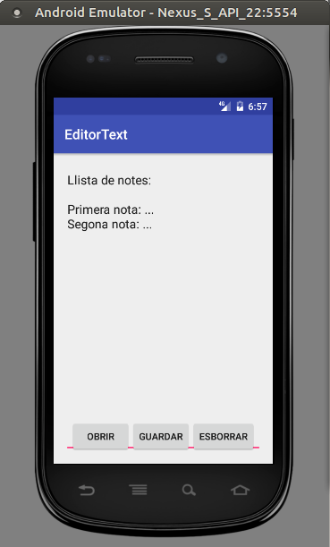

1.1 - Exemple
Anem a treballar sobre un exercici senzill, ampliant el que hem fet fins ara. Per tant ho podeu fer sobre el mateix projecte. Mostrarem un EditText, però ara podrem fer anotacions que es podran guardar en un únic fitxer anomenat notes.txt, i així no caldrà demanar ni el nom del fitxer ni navegar.
Hi haurà tres botons:
- Obrir: obrirà el contingut del fitxer notes.txt i el mostrarà en el EditText
- Guardar: guardarà el contingut del EditText en el fitxer notes.txt.
- Esborrar: únicament esborrarà el contingut del EditText.
Aquest podria ser l'aspecte:

El Activity_Main.xml: ara contindrà, a banda de l'EditText, un LinearLayout horitzontal situat a la banda de baix, i que contindrà els 3 botons.
<?xml version="1.0" encoding="utf-8"?>
<RelativeLayout xmlns:android="http://schemas.android.com/apk/res/android"
xmlns:tools="http://schemas.android.com/tools"
android:id="@+id/activity_main"
android:layout_width="match_parent"
android:layout_height="match_parent"
tools:context="com.example.editortext.MainActivity">
<EditText
android:text=""
android:id="@+id/text"
android:layout_width="match_parent"
android:layout_height="match_parent"
android:inputType="textMultiLine"
android:gravity="top" />
<LinearLayout
android:orientation="horizontal"
android:layout_width="wrap_content"
android:layout_height="wrap_content"
android:layout_alignParentBottom="true"
android:gravity="center_horizontal"
android:layout_centerHorizontal="true">
<Button
android:layout_width="wrap_content"
android:layout_height="wrap_content"
android:text="Obrir"
android:id="@+id/obrir" />
<Button
android:layout_width="wrap_content"
android:layout_height="wrap_content"
android:text="Guardar"
android:id="@+id/guardar" />
<Button
android:layout_width="wrap_content"
android:layout_height="wrap_content"
android:text="Esborrar"
android:id="@+id/esborrar" />
</LinearLayout>
</RelativeLayout>En el programa principal, a banda de col·locar les coses, ens definim la variable PATH que contindrà la ruta on volem col·locar el fitxer, i també el tractament dels 3 botons.
Podeu comprovar que tant en el botó d'obrir com en el de guardar, mirem primer l'existència de la ruta (podria ser que no existira el subdirectori files, i aleshores el crearíem).
package com.example.editortext
import androidx.appcompat.app.AppCompatActivity
import android.os.Bundle
import kotlinx.android.synthetic.main.activity_main.*
import java.io.*
class MainActivity : AppCompatActivity() {
override fun onCreate(savedInstanceState: Bundle?) {
super.onCreate(savedInstanceState)
setContentView(R.layout.activity_main)
val PATH = "/data/data/$packageName/files"
obrir.setOnClickListener {
try {
val dir = File(PATH)
if (!dir.exists())
dir.mkdir()
val f = (File(dir, "notes.txt"))
text.setText(f.readText())
} catch (e: FileNotFoundException) {
e.printStackTrace()
} catch (e: IOException) {
e.printStackTrace()
}
}
guardar.setOnClickListener {
try {
val dir = File(PATH)
if (!dir.exists())
dir.mkdir()
val f = PrintWriter(FileWriter(File(dir, "notes.txt")))
f.write(text.text.toString())
f.close()
} catch (e: FileNotFoundException) {
e.printStackTrace()
} catch (e: IOException) {
e.printStackTrace()
}
}
esborrar.setOnClickListener {
text.setText("")
}
}
}Llicenciat sota la Llicència Creative Commons Reconeixement NoComercial CompartirIgual 2.5